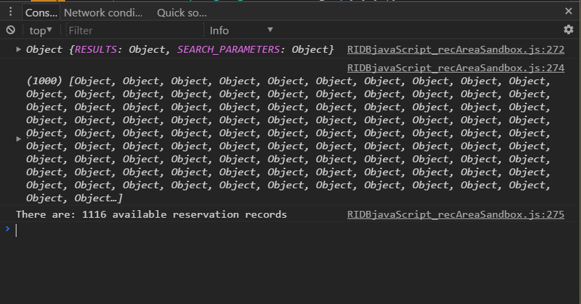
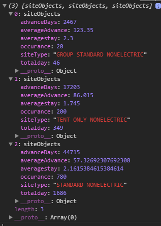

When we see land as a community to which we belong, we may begin to use it with love and respect.
Study nature, love nature, stay close to nature. It will never fail you.
Many recreation sites across the US take reservations, and the RIDB API includes records of those reservations dating back to 2006 (no personal identifiable information is included, for obvious reasons). What is included is data such as where the customer who made the reservation was from (by state and zip code), the dates the reservation was to start and end, the date the actual reservation was requested, the location, park, region, site type, number of people included in the reservation, a brief description of the region, the amount paid for the stay, and the use type of the reservation. This information could be used to determine the popularity of a site, the top grossing fee earning site, how long the average reservation was, how far the average user traveled to visit the site, what was the average number of people per reservation, when was the most popular time period for reservations, and how far in advance were reservations generally made, just to name a few uses. We will explore a few of these.
It should be noted that the RIDB includes a disclaimer related to customer zip codes. Not all point of sales require a customer zip code when making a transaction. When a customer zip code was not provided a default zip code of '92121' has been used. This has the potential to seriously skew any analysis done by zip code, unless this zip code were excluded.
The RIDB defines the endpoint call for reservations as: GET https://ridb.recreation.gov/api/v1/historicalreservations/ and lists a fairly robust set of URL parameters that can be set to slim down the query results. We will see in a minute why a review of these URL parameters will be a wise idea.
Before we dive too deep into the reservation data, lets briefly talk about another piece of data provided by the RIDB. Metadata for each endpoint call is included in the return information. Up to this point we have been focused solely on the RECDATA that is returned: dataReturn.RECDATA. However, the metadata also contains some useful information. The METADATA object contains two objects, the RESULTS object and the SEARCH_PARAMETERS object.
METADATA.RESULTS ObjectThe METADATA.RESULTS object contains two 'keys':
CURRENT_COUNT: lets you know the number of objects returned by your current GET query. This is mainly affect by the limit= search parameter, and by the maximum allowable return set by the API itself, or if you query a very specific parameter set. The documentation states the maximum return will be 50 records. With other endpoint calls, I found this to be the case, however, with the reservations endpoint call, I found it will return up to 1,000 records if no limit has been defined.
TOTAL_COUNT: tells how many records are available in the query. Without any URL parameters set to slim down the number of available reservation, either by dates, use fees, or location, there are 19,347,451 records! Thus, reviewing the URL query parameters may be good idea. If you really want all 19 million+ records, you may want to download the entire dataset to work with outside of API calls.
METADATA.SEARCH_PARAMETERS ObjectThe METADATA.SEARCH_PARAMETERS object contains a varying number of 'keys', on the parameter set in the URL request. At a minimum, the LIMIT, OFFSET and QUERY will be returned. If these parameters were not defined in the URL query, the default value will be shown. After some testing I discovered that latitude, longitude, and distance (radius) will show up in the SEARCH_PARAMETERS object, but terms such as orderdatemin and orderdatemax will not, but appear to work for filtering down the request return.
A few years ago, I had the opportuity to spend a few weeks in Oregon and made a visit to the Siuslaw National Forest and Cape Perpetua. A beautiful area, that I hope to get to visit again in the future. Lets take a look at reservation data for Cape Perpetua. We will put a date limiter on the query to keep return results somewhat reasonable, and limit the data to reservations made during 2015.
var reservations = new XMLHttpRequest();
reservations.open('GET', 'https://ridb.recreation.gov/api/v1/historicalreservations/?query=cape perpetua' + '&orderdatemin=2015-01-01&' + 'orderdatemax=2016-12-31&' + MyapiKey, true);
reservations.addEventListener('load', function () {
if (reservations.status >= 200 && reservations.status < 400) {
var dataCollected = JSON.parse(reservations.responseText);
var metadata = dataCollected.METADATA;
console.log(metadata);
var reservationObjects = dataCollected.RECDATA;
console.log(reservationObjects);
console.log("There are: " + metadata.RESULTS.TOTAL_COUNT + " available reservation records");
}
else {
console.log("Error in network request: " + reservations.status);
}
});
reservations.send(null);
Our console return will look something like:

1,116 reservations were made for Cape Perpetua during 2015. This seems like a reasonable number of records we can work with. Let's see what we can learn about the camping situation at Cape Perpetua. Maybe we want to know what sites were reserved, how long was the typical reservation for any particular type of site, how far in advance were reservations made, and how many reservations were made for any particular type of site. We could also look at peak reservation periods, evaluate where the majority of the customers came from by evaluating the customer zip code, determined which site types were the biggest earners, and how many people were generally included in the reservation.
There is quite a bit going on in the block of code that performs these actions. First we create an array of reservation objects based on our JSON return, just has we have done in previous examples, and calling it reservationObjects. The pieces to this is are the lines var sites = new Set(); and var summaryResults =[];, both of which we are just setting up as place holders for what will follow. A Set(); is basically an array in which we can add values, but will not allow duplicates within the array. For example, if we call:
sites.add("Tent");
sites.add("RV");
sites.add("Tent Electric");
sites.add("Tent);
sites.forEach( function (site){
console.log(site);
})
The result would be:
"Tent", "RV", "Tent Electric"The second "Tent" entry will be excluded. The
Set(); will only accept new, unique values. These add statements could also be chained together as sites.add("Tent").add("RV).add("Tent Electric)/*keep adding*/; if desired.
We have also added an array called summaryResults which will be used to hold the results of the data manipulation we are going to do on the reservations.
For each reservation in our return (reservationObjects) we will add the value stored in the .SiteType key to the Set of site types that reservation were made for.
reservationObjects.forEach (function (element) {
sites.add(element.SiteType);
})
Then, we will loop through each element of the Set of sites and create a temporary array that consists only of objects that match the current site type using .filter. Then we will reduce each temporary array into a single object that contains the total number of days that type of site was reserved for, the total number of days in advanced the site type was requested, the total number or reservations for a particular type of site, the average stay length, and the average advanced request time. Finally, we push the resultant summary objects into our summaryResults array.
var reservations = new XMLHttpRequest();
reservations.open('GET', ''https://ridb.recreation.gov/api/v1/historicalreservations/?query=cape perpetua' + '&orderdatemin=2015-01-01&' + 'orderdatemax=2016-12-31&' + MyapiKey', true);
reservations.addEventListener('load', function () {
if (reservations.status >= 200 && reservations.status < 400) {
var dataCollected = JSON.parse(reservations.responseText);
var reservationObjects = dataCollected.RECDATA;
var sites = new Set();
var summaryResults = [];
/*Add unique .SiteTypes to sites Set*/
reservationObjects.forEach (function (element) {
sites.add(element.SiteType);
})
/*Iterate through the different type of unique site in the reservation return*/
sites.forEach(function (site){
/*Create an array of reservation data for each unique site type*/
var tempHold = reservationObjects.filter( function(reservation){
return reservation.SiteType === site;
})
/*Summarize the data for each unique site type array into a single object*/
var sumObject = tempHold.reduce( function (testing, tempElement){
testing.totalday += calculateDays(tempElement);
testing.advanceDays += advancedNotice(tempElement);
testing.occurance++;
testing.averagestay = testing.totalday / testing.occurance;
testing.averageAdvance = testing.advanceDays / testing.occurance;
return testing;
}, new siteObjects(site))
summaryResults.push(sumObject);
})
/*Here are the results shown in the console window*/
console.log(summaryResults);
}
else {
console.log("Error in network request: " + reservations.status);
}
});
reservations.send(null);
/***HELPER FUNCTIONS CALLED IN ABOVE BLOCK***/
/*calculateDays function accepts a reservation object,
* converts the start and end dates to Date objects,
* subtracts the start date from the end date,
* converts the subtraction from milliseconds to days,
* and returns the number of days the reservation was for*/
function calculateDays(reservation) {
var startDate = new Date(reservation.StartDate);
var endDate = new Date(reservation.EndDate);
var difference = ((((endDate - startDate) / 24) /60) / 60) / 1000;
return difference;
}
/*advancedNotice does the same as calculate days,
* but returns the number of days in advance of the stay,
* that the reservation was made*/
function advancedNotice(reservation){
var reservationDate = new Date(reservation.OrderDate);
var startDate = new Date(reservation.StartDate);
var difference = ((((startDate - reservationDate) / 24) /60) / 60) / 1000;
return difference;
}
/*Simple object constructor that will be used to store
* summary data based on the reserved site type*/
function siteObjects(siteType){
this.siteType = siteType,
this.totalday = 0,
this.advanceDays = 0,
this.averagestay = 0,
this.averageAdvance = 0,
this.occurance = 0;
};
The result shown in our console window will be:

This probably could have also been accomplished using some type of 'for in' loop. However, the above approach was the easiest solution for me.
As we can see, a standard nonelectric campsite was far and away the most commonly reserved type of site, with almost four times as many reservation during 2015 as any other site type. Interesting enough, it also had the shortest amount of lead time in between making the reservation and the start date of the visit by roughly 33%. One might infer that there were many more standard non electric sites than any other type of site. We can also see that if we want to reserve a 'group standard nonelectric' site we might want to do so four months in advance. Though perhaps not statistically significant, we see that the group site had a slightly longer reservation period, which would make sense if having a get together that required reserving a group site.
We have already seen how to use similar data to make a table. In the next section we will use this information to create charts using Google Charts.